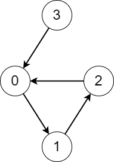
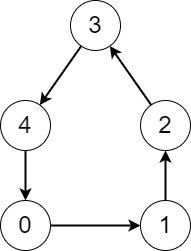

| Category | Difficulty | Likes | Dislikes |
|---|---|---|---|
| Algorithms | Hard | 356 | 7 |
amazon | bny-mellon
There is a directed graph consisting of n nodes numbered from 0 to n - 1 and n directed edges.
You are given a 0-indexed array edges where edges[i] indicates that there is an edge from node i to node edges[i].
Consider the following process on the graph:
x and keep visiting other nodes through edges until you reach a node that you have already visited before on this same process.Return an array answer where answer[i] is the number of different nodes that you will visit if you perform the process starting from node i.
Example 1:

Input: edges = [1,2,0,0]
Output: [3,3,3,4]
Explanation: We perform the process starting from each node in the following way:
- Starting from node 0, we visit the nodes 0 -> 1 -> 2 -> 0. The number of different nodes we visit is 3.
- Starting from node 1, we visit the nodes 1 -> 2 -> 0 -> 1. The number of different nodes we visit is 3.
- Starting from node 2, we visit the nodes 2 -> 0 -> 1 -> 2. The number of different nodes we visit is 3.
- Starting from node 3, we visit the nodes 3 -> 0 -> 1 -> 2 -> 0. The number of different nodes we visit is 4.Example 2:

Input: edges = [1,2,3,4,0]
Output: [5,5,5,5,5]
Explanation: Starting from any node we can visit every node in the graph in the process.
Constraints:
n == edges.length2 <= n <= 1050 <= edges[i] <= n - 1edges[i] != i